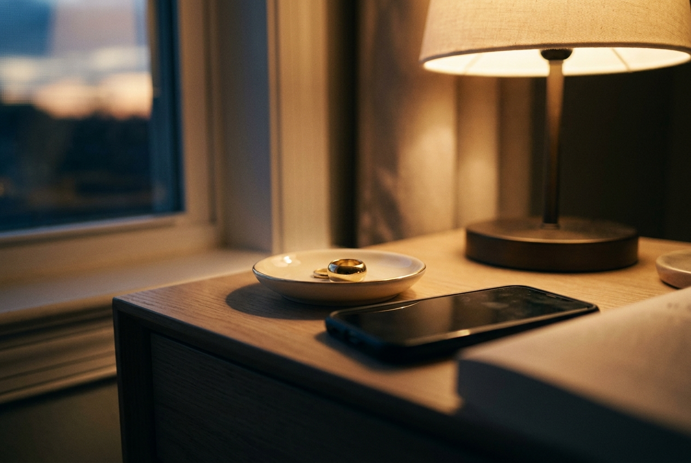

The ring taps a few times an hour — but only inside windows you choose. Pick three. Anchor them to moments that already exist in your day.
The drive, the train, the walk — the stretch of day most likely to disappear entirely. A tap here lands you back behind your own eyes before the day takes over.
The lunch you eat with one hand while reading with the other. A pulse in this window is an invitation to taste one bite. Just the one.
The hour that decides how the night goes. A tap here may catch you mid-scroll — and offer you the rest of the evening back.
From the home screen, choose Windows. You'll see a quiet map of your day, empty for now.
Drag each one onto a real moment — the commute, the desk lunch, the hour before sleep. Yours may differ. Real beats ideal.
Gentle, standard, or rare. That's the last decision. The ring takes it from here.
One thing worth knowing: the windows are the only thing the app does. It never asks how it went. It never reports back. There is nothing to check, nothing to keep up, no number waiting for you in the morning. The practice lives on your finger, not on your phone.
Before you set anything — ten seconds.
Where would a tap have found you an hour ago?
That's probably your first window.
two minutes, once — then the ring does the remembering